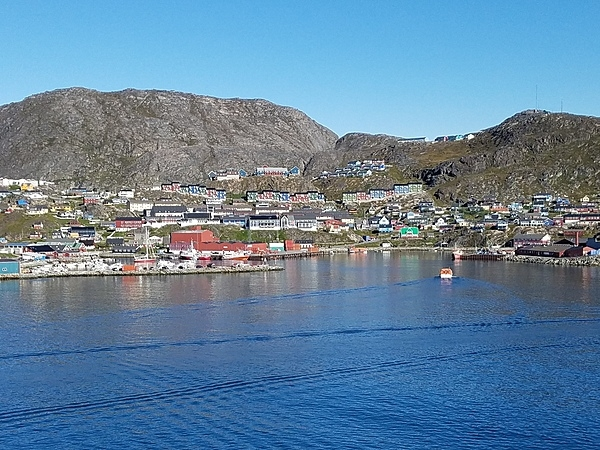
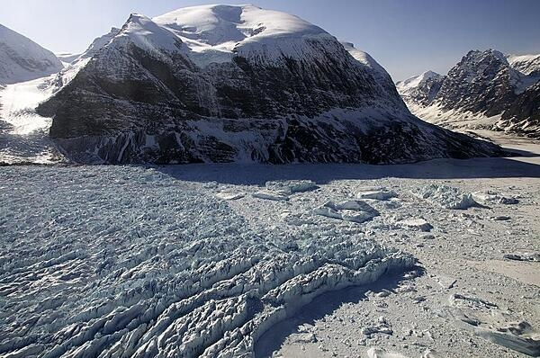

Greenland, the world's largest island, is about 80% ice capped.
The Inuit came to Greenland from North America in a series of migrations that stretched from 2500 BC to the 11th century. Vikings reached the island in the 10th century from Iceland; Danish colonization began in the 18th century, and Greenland
became part of the Kingdom of Denmark in . It joined the European Community (now the EU) with Denmark in but withdrew in over a dispute centered on stringent fishing quotas. Greenland remains a member of the EU's Overseas Countries and Territories Association.
The Danish parliament granted Greenland home rule in ; the law went into effect the following year. Greenland voted in favor of self-government in and acquired greater responsibility for internal affairs when the Act on Greenland Self-Government was signed into law in . The Kingdom of Denmark, however, continues to exercise control over several policy areas on behalf of Greenland, including foreign affairs, security, and financial policy, in consultation with Greenland's Self-Rule Government.
Greenland is the 206th most populous nation (out of 237) recognized by CIA World Factbook.
Population Distribution
Settlement concentrated on the southwest shoreline, with limited settlements scattered along the remaining coast; interior is uninhabited

View of Qaqortoq from the sea, the largest town in south Greenland with 3,200 inhabitants and is a cultural and commercial center of the region. Credit: The World Factbook 2021. Washington, DC: Central Intelligence Agency, 2021.
Culture
Religions
Evangelical Lutheran
traditional Inuit spiritual beliefs
Languages
Greenlandic (Kalaallisut)
Danish
English
note: West Greenlandic or Kalaallisut is the official language; Tunumiisut (East Greenlandic) and Inuktun (Polar Inuit Greenlandic) are considered dialects of Kalaallisut and spoken by about 10% of Greenlanders
Ethnic Makeup
Greenlandic 88.1%
Danish 7.1%
Other 2.3%
Filipino 1.6%
Other Nordic peoples 0.9%
Government
Government Type - parliamentary democracy (Parliament of Greenland or Inatsisartut)
Head of State - King Frederik X of Denmark (since 14 January 2024), represented by High Commissioner Julie Praest Wilche (since May 2022) (2024)
Head of Government - Premier Mute B. Egede (since 23 April 2021)
Geography & Environment
Climate & Location
Climactically, Greenland is arctic to subarctic with cool summers and cold winters.
Greenland is located in Northern North America. It is an island between the Arctic Ocean and the North Atlantic Ocean, northeast of Canada.
Geography & Geology
Dominates North Atlantic Ocean between North America and Europe;
Sparse population confined to small settlements along coast;
Approximately one-quarter of the population lives in the capital, Nuuk;
World's second largest ice sheet after that of Antarctica covering an area of 1.71 million sq km (660,000 sq mi) or about 79% of the island, and containing 2.85 million cu km (684 thousand cu mi) of ice (this is almost 7% of all of the world's fresh water); if all this ice were converted to liquid water, one estimate is that it would be sufficient to raise the height of the world's oceans by 7.2 m (24 ft)

Pictured is the calving front of Kangerdlugssup Glacier in central west Greenland, where large chunks of ice break off from the glaciers to form icebergs. Credit: NASA/Michael Studinger.
Current Environmental Issues
especially vulnerable to climate change and disruption of the Arctic environment; learn more
preservation of the Inuit traditional way of life (ie: whaling and seal hunting)